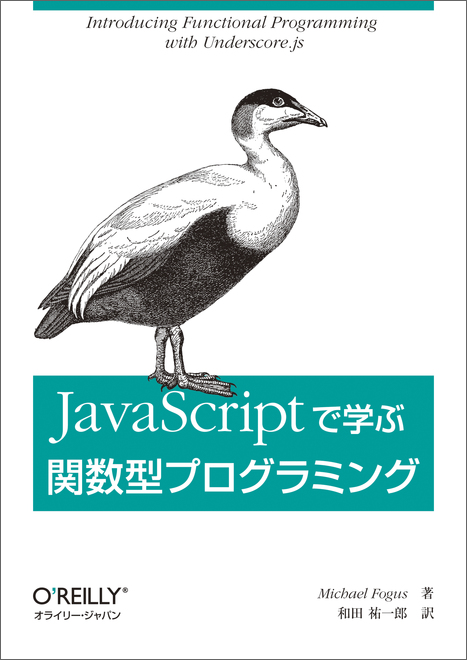

{
"名前": "HIGASHI Taiju",
"勤務先": "株式会社永和システムマネジメント",
"部署": "ITサービス事業部",
"活動領域": "福井",
"好きな言語": ["Perl", "JavaScript", "Lisp-[12]", "Haskell"]
}
4年ほど浦島太郎気味なので、今日の内容がすでに流行って廃れた話だったらごめんなさい。
{
"名前": "HIGASHI Taiju",
"勤務先": "株式会社永和システムマネジメント",
"部署": "ITサービス事業部",
"活動領域": "福井",
"好きな言語": ["Perl", "JavaScript", "Lisp-[12]", "Haskell"]
}
4年ほど浦島太郎気味なので、今日の内容がすでに流行って廃れた話だったらごめんなさい。
過去にはこんな発表をしました。
結果的にJavaScriptで関数型言語に入門して良かったと思ってます。

JavaScriptでもっと関数型プログラミングできる気がする。
// Underscore
const incomplete = _.partial(_.filter, _, {complete: false});
// or
const incomplete = xs => _.filter(xs, {complete: false});
// Rambda
const incomplete = R.filter(R.where({complete: false}));
// Underscore
const stooges = [{name: 'curly', age: 25}, ...];
const yougest = l => _.chain(l).sortBy(stooge => stooge.age)
.map(stooge => stooge.name + ' is ' + stooge.age)
.first()
.value();
yougest(stooges);
// Rambda
const stooges = [{name: 'curly', age: 25}, ...];
const yougest = R.pipe(R.sortBy(R.prop('age')),
R.juxt([R.pluck('name'), R.pluck('age')]),
R.apply(R.zip),
R.map(R.join(' is ')),
R.head);
yougest(stooges);
implementations.md にはなぜか記載がない…